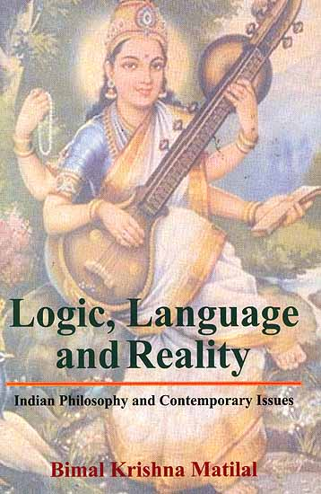

Motivation and Aims

Existing ATP Languages
- Most (including TPTP) are for logical formulae
- Minimal support for process control
- ITP systems provide rich command languages
- Some previous work for ATP
- System specific control in input
- APIs for external control
- Generic command languages
Aims
- A generic TPTP command language
- Store, manipulate, reason about logical formulae
- Command formulae syntax same as logical formulae
- Command formulae at the same level as logical formulae
- Understood by ATP system or interpreter - TPI systems